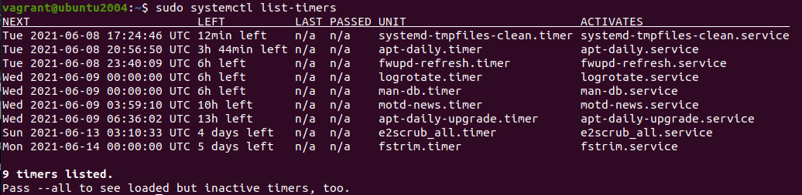

Índice
Índice107.2 Agendamento de tarefasCronAtivando os logs do CrontabEditando o Crontabcront.{allow,deny}AnacronATSystemD TimerSystemD Run
107.2 Agendamento de tarefas
Vamos ver as possibilidades para fazermos o agendamento de tarefas no Linux, seja usando o Cron, AT ou até mesmo o SystemD.
Cron
O crontab é utilizado para agendar tarefas que serão executados periodicamente no sistema, ao contrário do comando at, que só vai executar comandos pontualmente.
Há dois tipos de crontab, são eles: a de usuários e a do sistema. Ambas são arquivos que contem tabelas com informação de quando o comando especificado deve ser executado, sendo que cada linha corresponde a um único agendamento. O crontab é gerenciado pelo daemon crond, que a cada um minuto verifica se há algum agendamento que deve ser executado e, se houver, executa-o.
O crontab do sistema fica localizado no arquivo /etc/crontab e já possui agendamentos para realizar as tarefas que se encontram
nos diretórios /etc/cron.{hourly,daily,weekly,monthly,d}.
x$ ls -lhd /etc/cron.{hourly,daily,weekly,monthly,d}drwxr-xr-x 2 root root 4.0K Jun 7 11:56 /etc/cron.ddrwxr-xr-x 2 root root 4.0K Apr 2 12:46 /etc/cron.dailydrwxr-xr-x 2 root root 4.0K Apr 2 12:32 /etc/cron.hourlydrwxr-xr-x 2 root root 4.0K Apr 2 12:32 /etc/cron.monthlydrwxr-xr-x 2 root root 4.0K Apr 2 12:44 /etc/cron.weekly# Dentro de cada uma dessas pastas existem arquivos de Cron para serem executados de tempos em tempos.# Se você ver um comando 'run-parts' no cron do sistema, esse comando vai executar todos os scripts dentro do diretório.
Vamos ver como funcionam cada opção do Crontab.
| Opção | Descrição |
|---|---|
| Minuto | Os minutos variam de 0-59. |
| Hora | As horas variam de 0-23. |
| Dia | Os dias variam de 1-31. |
| Mês | Os meses variam de 1-12. |
| Dia da semana | Os dias da semana variam de 0-7, sendo 0 e 7 domingo. |
| Usuário | Um usuário válido no sistema no qual o cron será executado. |
| Comando | O comando que será executado, pode ser um script também. |
| Opções | Abaixo todas as opção são válidas desde minuto até dia da semana |
| * | Representa todas as possibilidades, qualquer valor. |
| , | Separa valores por vírgula. |
| - | Identifica um range de valores. |
| / | Especifica “pulos” de valores, por exemplo: se no campo hora utilizarmos "*/4" o comando será executado as 0,4,8,12,16,20. |
Vamos ver alguns exemplo para assimilar melhor isso.
xxxxxxxxxx# Todo dia, no mês de Agosto, as 00:05:5 0 * 8 * ...# Todo dia 1 de qualquer mês, as 14:15:15 14 1 * * ...# Toda Segunda até Sexta, as 22:00:0 22 * * 1-5# Roda a cada 2 horas e 23 minutos, sempre entre as 00:00 e 20:00 :23 0-20/2 * * *# Essa opção acima iria rodar todo dia as:# as 04:23:00# as 06:23:00# as 08:23:00# as 10:23:00# as 12:23:00# as 14:23:00## Parte do período foi omitido.# Todo domingo as 4:05 :5 4 * * sun# A cada 2 meses, todo dia 1° as 00:00 e 12:00 :0 0,12 1 */2 *# As 00:00 de todo domingo:@weeklyVocê não deve usar script que exija interação com o usuário.
As opções abaixo substituem as 5 opções do Cron (minuto, hora, dia do mês, mês e dia da semana).
| Opção | Descrição |
|---|---|
| @reboot | Especifica execução quando a máquina for reiniciada. |
| @yearly ou @annually | Especificam execução uma vez ao ano, equivale a 0 0 1 1 *. Roda as 00:00, todo dia 1° do mês 1 (Janeiro). |
| @monthly | Especifica execução somente uma vez ao mês, equivale a 0 0 1 * *. Roda as 00:00, todo dia 1°. |
| @weekly | Especifica execução somente uma vez na semana, equivale a 0 0 * * 0. Roda as 00:00 de todo domingo. |
| @daily ou @midnight | Especifica execução uma vez ao dia, equivale a 0 0 * * *. Roda as 00:00 de todo dia. |
| @hourly | Especifica execução somente uma vez a cada hora, equivale a 0 * * *. Roda toda hora com zero minutos (13:00, 14:00, 15:00...). |
Ativando os logs do Crontab
Para ativar os logs do crontab precisamos editar o arquivo /etc/rsyslog.d/50-default.conf do rsyslog, modifique a linha abaixo, removendo o # do começo da linha:
xxxxxxxxxx##### Antes:#cron.* /var/log/cron.log##### Depois de editar:cron.* /var/log/cron.log
Se preferir, pode criar esse arquivo, mas o sistema vai criar para você:
xxxxxxxxxx# Crie o arquivo:sudo touch /var/log/cron.log# Aplicando as permissões do arquivo:sudo chmod 640 /var/log/cron.log# Aplicando Dono e Grupo dono corretos:sudo chown syslog.adm /var/log/cron.log
Editando o Crontab
Segue algumas opções para o comando crontab:
| Opção | Descrição |
|---|---|
| -r | Remove o arquivo crontab do usuário logado e adiciona um vazio (faz um reset). |
| -e | Edita o arquivo do crontab do usuário logado. |
| -l (L minusculo) | Lista os agendamentos do cron do usuário logado. |
| -u <username> | Muda o usuário, precisa ser root. |
O arquivo do Cron para o sistema fica em /etc/crontab.
Já os Cron dos usuários ficam em /var/spool/cron/crontabs/:
xxxxxxxxxx# Exibindo os crontab ativos dos usuários:sudo ls /var/spool/cron/crontabs/vagrant# No caso, só possui o crontab do usuário vagrant.
cront.{allow,deny}
Existe 2 arquivos de controle do Cron, ele ficam em /etc/cront.{allow,deny}, o arquivo cron.allow vai permitir que o usuário que estiverem dentro dele use o Cron, caso algum usuário esteja fora desse arquivo, mesmo que você não esteja negando ele, ele não poderá usar, só é permitido o uso quem estiver dentro desse arquivo, e os usuários que estiverem dentro de cront.deny não poderão usar.
O .allow tem prioridade sobre o .deny, então por mais que negue um usuário e ele esteja no allow, ele poderá executar. Vale ressaltar que usar os dois arquivos em conjunto não faz muito sentido, já que o .allow nega o uso de quem estiver fora dele, sendo assim, pode usar um ou outro.
No Debian, e distribuições baseadas como o Ubuntu, se ambos arquivos não existem, o uso dos recursos da cron é liberado para todos os usuários. No entanto, em sistemas baseados em RedHat, como o CentOS, na inexistência dos arquivos, o uso é bloqueado a todos os usuários, exceto para o usuário root.
Anacron
O conceito de funcionamento dos agendamentos de tarefas via cron pode ser aplicado a um outro agendador de tarefas chamado anacron. Este agendador possui a função de executar tarefas que por algum motivo não foram executadas, geralmente pelo fato da máquina estar desligada no momento agendado para execução.
Seu arquivo fica em /etc/anacrontab.
AT
O comando at pode agendar tarefas de forma semelhante ao cron, mas ele só roda uma vez. O at permite o controle dos usuários que podem agendar comandos através dos arquivos /etc/at.allow e /etc/at.deny.
Estes arquivos são organizados no formato de um usuário por linha. Durante o agendamento é verificado primeiro o arquivo /etc/at.allow (listando quem pode executar o comando) e depois /etc/at.deny.
Caso eles não existam, o agendamento de comando é permitido a todos os usuários.
Utilize nos comandos do script e no agendador, sempre o (path) caminho completo do aplicativo a ser executado, exemplo para o comando
tar, use/bin/tar, também na linha de comando que inserir no cron use o caminho completo para o script, por exemplo, executar um script que está em/home/fulano, use a linha:/home/fulano/nome-do-scripte não somentenome-do-script.Muito cuidado com scripts, o comodismo pode cair no esquecimento e não atualizar o script de backup quando incluir novos serviços, diretórios ou usuários, monitore constantemente, teste e avalie o que está sendo feito.
Uma forma de agendar tarefas com at é da seguinte forma:
xxxxxxxxxx### Para agendar uma tarefa para daqui 3 horas, digite:$ at now +3hour# Depois disso você vai cair no shell do AT, pode ver porque o prompt vai mudar, provavelmente para 'at> '.# Agora você deve digitar o que precisar ser agendado, por exemplo: Você pode agendar um bkp, rodar um script, voce deve colocar o caminho completo do script aqui.# Para finalizar você roda Ctrl+d, e o job será criado.# Outra forma seria:$ at 15:16# Ou até mesmo:$ at 10:00am 14052021| Comando | Descrição |
|---|---|
| at | Comando at. |
| atq | Lista os jobs criados pelo comando at, igual at -l. |
SystemD Timer
É um recurso do SystemD para fazer o agendamento de tarefas.
Para lista os agendamentos ativo rode o comando sudo systemctl list-timers, veja abaixo:

A UNIT sempre terá o mesmo nome do SERVICE, você sempre terá um .timer e um .services. Você consegue notar para quando é o agendamento e quanto tempo falta para a execução dele.
Vamos ver a sintaxe de um .timer padrão:
xxxxxxxxxx$ cat /lib/systemd/system/apt-daily.timer[Unit]Description=Daily apt download activities[Timer]OnCalendar=*-*-* 6,18:00RandomizedDelaySec=12hPersistent=true[Install]WantedBy=timers.target# Olhe em OnCalendar, o 1° asterisco é o Ano, o 2° é o Mês e o 3° é o Dia. Ele vai toda todo ano, todo mês e todo dia as 6:00 e as 18:00.### Vamos dar uma olhada nuns exemplos:# Das 6 até as 12h:*-*-* 6..12:00# Nas Segundas-feiras, as 7h:Mon *-*-* 7:00# Das Segundas até Sexta, as 10h:Mon..Fri *-*-* 10:00# Terça e quinta, as 13h:Tue..Thu *-*-* 13:00# Se quiser pode colocar ':' deopis dos minutos para especificar os segundos.Em sistemas Redhat, você deve substituir o
Mon..FriporMon-Fri.
Vamos ver algumas opções do .timer:
| Opções | Descrição |
|---|---|
| OnCalendar | Especificamos quando vai todar o agendamento. |
| RandomizedDelaySec | Significa que o agendamento não vai rodar no momento especificado certinho, ele vai randomizar o agendamento com um delay para não rodar muita coisa junta.RandomizedDelaySec=12h significa que ele vai rodar com um delay de até 12 horas. |
| Persistent | Assim que o servicço é executado ele é gravado em disco. Muito bom para executar agendamentos perdidos por algum motivo. Só pode ser usado se OnCalendar estiver em uso. |
| OnBootSec | Define um cronômetro relativo a quando a máquina foi inicializada. Ex.: OnBootSec=15min. |
| OnUnitActiveSec | Diz para rodar a cada tempo, por ex.: OnUnitActiveSec=1d, a cada 24 horas depois que o sistema fica ativo . |
Para mais detalhes, olhe aqui, similar a man systemd.timer, Além disso, veja também man systemd.time.
Vamos criar um exemplo de agendamento:
xxxxxxxxxx# Vamos começar criando o '.service':sudo vim /lib/systemd/system/exemplo.service### Start example service ###[Unit]Description=Exemplo systemd-timerConditionACPower=true[Service]Type=oneshotExecStart=/bin/sh -c 'date >> /tmp/teste_systemd-time.txt'### End example service ################################################################## Agora vamos criar o '.timer':sudo vim /lib/systemd/system/exemplo.timer### Start example timer ###[Unit]Description=Teste systemd timer[Timer]OnCalendar=*-*-* 21:25:00AccuracySec=1us[Install]WantedBy=timers.target### End example timer ###
Agora vamos iniciar o serviço:
xxxxxxxxxx# Recarregue o damon do systemD:sudo systemctl daemon-reload# Inicie o timer:sudo systemctl start exemplo.timer# Verifique o status:sudo systemctl status exemplo
SystemD Run
Similar ao at, mas roda sob o SystemD.
xxxxxxxxxx# Rodar um comando daqui 1 minuto:date && sudo systemd-run --on-active=1m --timer-property=AccuracySec=1us /usr/bin/echo $(date) >> /tmp/novo# Se for rodar sem root, acrescente a opção '--no-ask-password'.